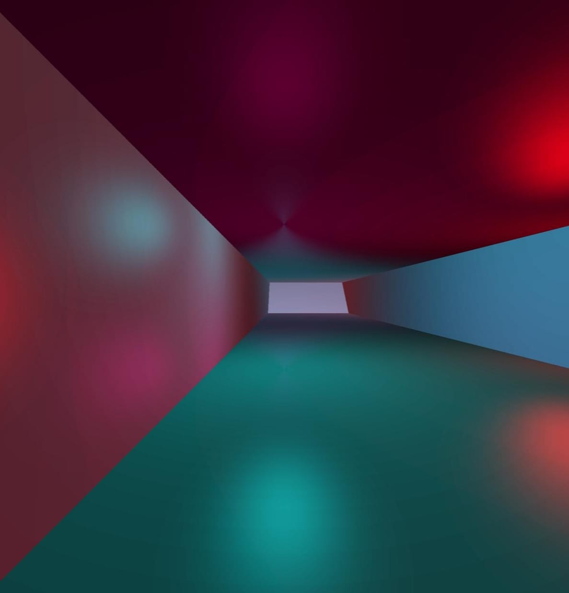
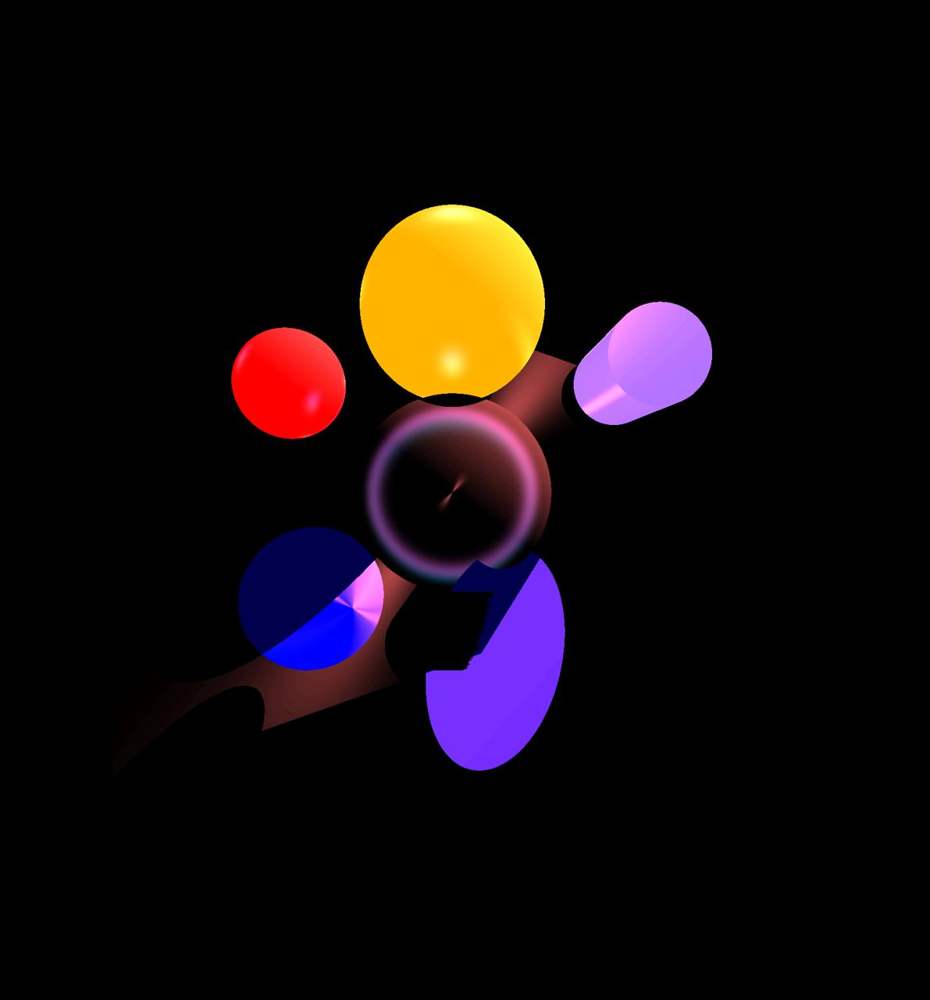
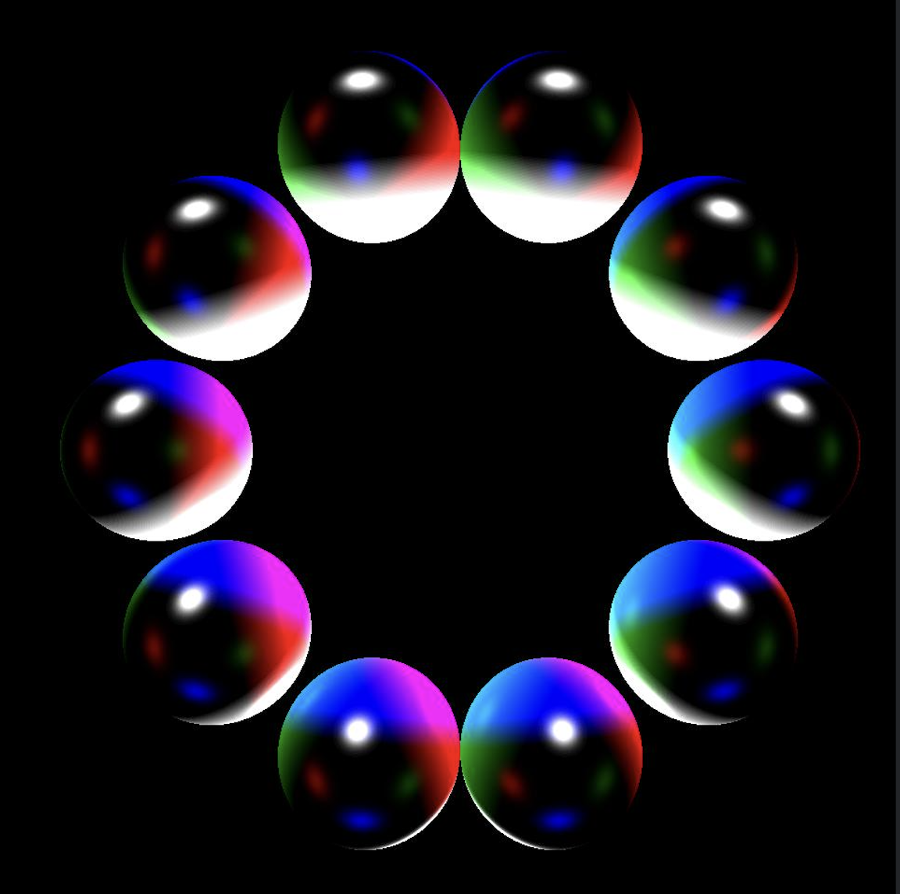

MiniRT
more images coming!!
github miniRT
About
miniRT is a raytracer that demonstrates fundamental computer graphics concepts including:
- Ray-object intersection detection
- Phong lighting model
- Shadow casting
- Real-time rendering
- Scene parsing
Features
- Objects: spheres, planes, cylinders, triangles
- Lighting: ambient, point lights, Phong shading
- Extras: checkerboards, anti-aliasing ready


